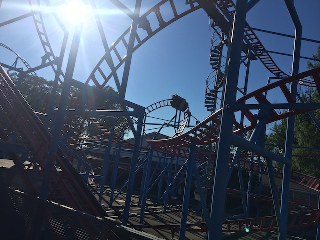
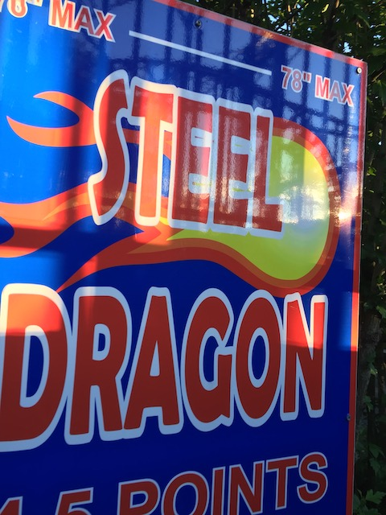
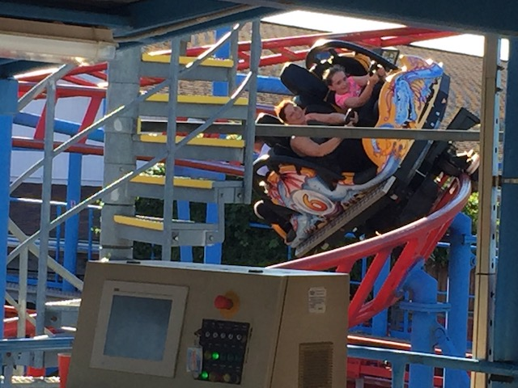

| |
Steel Dragon Review

We're here at Waldameer, where we'll be reviewing Steel Dragon. The park's spinning coaster. Nope, this one is not a giga coaster like the other Steel Dragon sadly. =( But this one's fun too. All right. That's enough talking. Let's get riding. We get in the cars, pull down the lap bar, and off we go. We head around a turn and begin climbing the lifthill, getting a nice view of Waldameer and Lake Erie. We head around a turn, through some straight track. We then head down a curved drop to the bottom. We don't get much spinning action here, but its a fun drop and delivers some speed. You then head up a curved hill, and we start to spin a little bit here. YAY!!!! We then head through some trims before we drop on down and get some more action. We then head down another drop, through one of those vertical horseshoe elements, and then around another upward curve into more brakes. Hey, at least we get some spinning action in that. We then head around another drop, around another curve through some more S shaped track that spin us and give us a little bit of laterals. Go through some brakes to slow down, beore heading down another small drop, through more curves and into a downward helix. Hey, more spinning action. We then head up a small hill, around more curves, and into the brake run. I'm not sure what it is about Spider, but this particular clone is really good. I think it has something to do with the fact that it's a little jerky. But that jerkiness actually makes it seem faster and almost pushes it to spin more. Though by no means is it the best spinning coaster ever. But hey. It varies from weight to weight. Hopefully you'll get a really good ride on Steel Dragon.
7/10
Location: Waldameer
Opened: 2004
Built by: Maurer Söhne
Last Ridden: June 22, 2021
I have ridden this exact same ride at the following parks.
Hersheypark
Lagoon
Santa Cruz Beach Boardwalk
Steel Dragon Photos





Home
|